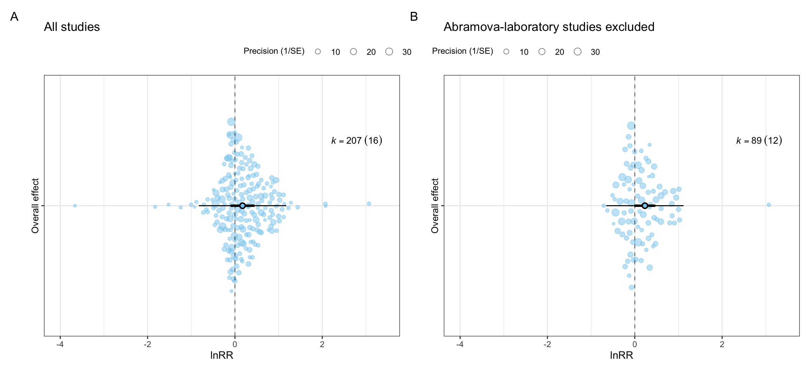

# Load the complete lnRR effect-size database.
db <- readr::read_csv(
file.path(derived_dir, "db_effect_sizes.csv"),
show_col_types = FALSE
)
# Construct the lnRR sampling variance-covariance matrix for any subset.
construct_lnRR_vcv <- function(data) {
metafor::vcalc(
vi = lnRR_var,
cluster = study_id,
grp1 = ex_id,
grp2 = con_id,
w1 = ex_n,
w2 = c_n,
obs = es_id,
rho = 0.5,
checkpd = TRUE,
data = data
)
}
# Reconstruct V and fit the intercept-only lnRR model for any subset.
fit_lnRR_model <- function(data) {
V <- construct_lnRR_vcv(data)
metafor::rma.mv(
yi = lnRR,
V = V,
random = list(
~ 1 | study_id,
~ 1 | es_id,
~ 1 | strain
),
test = "t",
method = "REML",
sparse = TRUE,
data = data
)
}
# Fit the overall lnRR model before applying either exclusion.
model_all <- fit_lnRR_model(db)
# Identify the Abramova-laboratory studies and count their current effect sizes.
abramova_studies <- db |>
dplyr::filter(grepl("^abramova_", study_id)) |>
dplyr::distinct(study_id) |>
dplyr::pull(study_id)
abramova_effect_sizes <- sum(db$study_id %in% abramova_studies)Sensitivity analysis
We use two sensitivity analyses to examine whether specific data-inclusion decisions influence the overall lnRR estimate. First, we exclude the four Abramova-laboratory studies together. Second, we exclude the effect sizes that required exact-zero boundary corrections.
NoteVariable definitions
| Variable | Definition |
|---|---|
study_id |
Identifier for the primary research paper. |
es_id |
Unique identifier for each effect size. |
ex_id, con_id |
Identifiers for the exposed and control groups used to construct V. |
lnRR |
Log response ratio for the difference in group means. |
lnRR_var |
Sampling variance of lnRR. |
c_mean_continuity_corrected |
Indicates that the control-group mean required a boundary correction. |
c_sd_continuity_corrected |
Indicates that the control-group SD required a boundary correction. |
| \(k\) | Number of effect sizes included in a model. |
Analysis data and model functions
We load the effect-size database created in the Effect size calculation. The model functions reconstruct V with the variables and working correlation used in the Sampling variance-covariance matrices. Then, we fit the random-effects structure specified in the Overall effects.
Combined Abramova-laboratory exclusion
The 4 Abramova-laboratory studies contribute 118 of the 207 effect sizes. When studies from one laboratory contribute a large proportion of the data, laboratory-specific methods, experimental conditions, or reporting practices may have a disproportionate influence on the overall estimate. To examine this possibility, we remove all four studies together, reconstruct V, and compare the refitted model with the model that includes all studies.
# Remove all studies with the Abramova study identifier.
db_without_abramova <- db |>
dplyr::filter(!study_id %in% abramova_studies)
# Reconstruct V and refit the lnRR model after the combined exclusion.
model_without_abramova <- fit_lnRR_model(db_without_abramova)We use the same lnRR scale in both panels. Panel A shows the original overall-effect model, and Panel B shows the model after excluding the four Abramova-laboratory studies.
# Set one effect-size range for both orchard plots.
shared_effect_limits <- range(
c(
db$lnRR,
model_all$pi.lb,
model_all$pi.ub,
model_without_abramova$pi.lb,
model_without_abramova$pi.ub
),
finite = TRUE
)
effect_padding <- diff(shared_effect_limits) * 0.05
shared_effect_limits <- shared_effect_limits + c(
-effect_padding,
effect_padding
)
shared_effect_breaks <- pretty(shared_effect_limits, n = 5)
# Draw the overall model that includes all studies.
plot_all <- orchaRd::orchard_plot(
model_all,
group = "study_id",
xlab = "lnRR",
flip = TRUE
) +
ggplot2::scale_x_discrete(labels = "Overall effect") +
ggplot2::scale_y_continuous(
limits = shared_effect_limits,
breaks = shared_effect_breaks
) +
ggplot2::labs(title = "All studies")
# Draw the model after excluding the Abramova-laboratory studies.
plot_without_abramova <- orchaRd::orchard_plot(
model_without_abramova,
group = "study_id",
xlab = "lnRR",
flip = TRUE
) +
ggplot2::scale_x_discrete(labels = "Overall effect") +
ggplot2::scale_y_continuous(
limits = shared_effect_limits,
breaks = shared_effect_breaks
) +
ggplot2::labs(title = "Abramova-laboratory studies excluded")
# Place the original and sensitivity models side by side.
abramova_comparison_plot <-
(plot_all + plot_without_abramova) +
patchwork::plot_layout(guides = "collect") +
patchwork::plot_annotation(tag_levels = "A") &
ggplot2::theme(legend.position = "top")
abramova_comparison_plot
# Compare the numerical results shown in the two panels.
abramova_comparison <- tibble::tibble(
Model = c(
"All studies",
"Abramova-laboratory studies excluded"
),
k = c(nrow(db), nrow(db_without_abramova)),
Studies = c(
dplyr::n_distinct(db$study_id),
dplyr::n_distinct(db_without_abramova$study_id)
),
Estimate = c(
unname(stats::coef(model_all)),
unname(stats::coef(model_without_abramova))
),
`95% CI lower` = c(
model_all$ci.lb,
model_without_abramova$ci.lb
),
`95% CI upper` = c(
model_all$ci.ub,
model_without_abramova$ci.ub
)
)
abramova_comparison |>
knitr::kable(
digits = 3,
caption = "Overall lnRR with and without the Abramova-laboratory studies."
)| Model | k | Studies | Estimate | 95% CI lower | 95% CI upper |
|---|---|---|---|---|---|
| All studies | 207 | 16 | 0.174 | -0.101 | 0.449 |
| Abramova-laboratory studies excluded | 89 | 12 | 0.232 | -0.008 | 0.471 |
Exact-zero effect-size exclusion
Two effect sizes required a boundary correction because the reported control-group summary statistics produced an exact-zero mean and SD. We identify these effect sizes, remove them, reconstruct V, and refit the multilevel intercept-only model.
# Identify rows that received both control-group boundary corrections.
exact_zero_ids <- db |>
dplyr::filter(
c_mean_continuity_corrected,
c_sd_continuity_corrected
) |>
dplyr::pull(es_id)
if (length(exact_zero_ids) == 0) {
stop("No exact-zero-corrected effect sizes were identified.")
}
# Retain all other effect sizes for the sensitivity model.
db_without_exact_zero <- db |>
dplyr::filter(!es_id %in% exact_zero_ids)
# Reconstruct V and refit the model after excluding the corrected rows.
model_without_exact_zero <- fit_lnRR_model(db_without_exact_zero)We report the identifiers of the excluded effect sizes and compare the overall lnRR estimates before and after the exclusion.
# List the effect sizes removed from the sensitivity model.
tibble::tibble(`Effect size excluded` = exact_zero_ids) |>
knitr::kable(caption = "Effect sizes excluded from the sensitivity model.")| Effect size excluded |
|---|
| es184 |
| es190 |
# Create the model-comparison table.
exact_zero_comparison <- tibble::tibble(
Model = c(
"All effect sizes",
"Exact-zero-corrected effect sizes excluded"
),
k = c(nrow(db), nrow(db_without_exact_zero)),
Studies = c(
dplyr::n_distinct(db$study_id),
dplyr::n_distinct(db_without_exact_zero$study_id)
),
Estimate = c(
unname(stats::coef(model_all)),
unname(stats::coef(model_without_exact_zero))
),
`95% CI lower` = c(
model_all$ci.lb,
model_without_exact_zero$ci.lb
),
`95% CI upper` = c(
model_all$ci.ub,
model_without_exact_zero$ci.ub
)
)
exact_zero_comparison |>
knitr::kable(
digits = 3,
caption = "Overall lnRR with and without the exact-zero-corrected effect sizes."
)| Model | k | Studies | Estimate | 95% CI lower | 95% CI upper |
|---|---|---|---|---|---|
| All effect sizes | 207 | 16 | 0.174 | -0.101 | 0.449 |
| Exact-zero-corrected effect sizes excluded | 205 | 16 | 0.172 | -0.101 | 0.445 |
NoteSession information
sessionInfo()#> R version 4.5.1 (2025-06-13)
#> Platform: aarch64-apple-darwin20
#> Running under: macOS Tahoe 26.6.2
#>
#> Matrix products: default
#> BLAS: /Library/Frameworks/R.framework/Versions/4.5-arm64/Resources/lib/libRblas.0.dylib
#> LAPACK: /Library/Frameworks/R.framework/Versions/4.5-arm64/Resources/lib/libRlapack.dylib; LAPACK version 3.12.1
#>
#> locale:
#> [1] C.UTF-8/C.UTF-8/C.UTF-8/C/C.UTF-8/C.UTF-8
#>
#> time zone: America/Edmonton
#> tzcode source: internal
#>
#> attached base packages:
#> [1] stats graphics grDevices utils datasets methods base
#>
#> other attached packages:
#> [1] tibble_3.3.1 readr_2.2.0 patchwork_1.3.2
#> [4] orchaRd_2.2.1 metafor_5.0-1 numDeriv_2016.8-1.1
#> [7] metadat_1.6-0 Matrix_1.7-3 knitr_1.51
#> [10] ggplot2_4.0.3 dplyr_1.2.1
#>
#> loaded via a namespace (and not attached):
#> [1] sandwich_3.1-3 generics_0.1.4 lattice_0.22-7 hms_1.1.4
#> [5] digest_0.6.39 magrittr_2.0.5 evaluate_1.0.5 grid_4.5.1
#> [9] estimability_2.0.0 RColorBrewer_1.1-3 mvtnorm_1.4-2 fastmap_1.2.0
#> [13] jsonlite_2.0.0 survival_3.8-3 multcomp_1.4-31 scales_1.4.0
#> [17] TH.data_1.1-5 codetools_0.2-20 cli_3.6.6 rlang_1.3.0
#> [21] crayon_1.5.3 splines_4.5.1 bit64_4.8.2 withr_3.0.3
#> [25] yaml_2.3.12 otel_0.2.0 ggbeeswarm_0.7.3 tools_4.5.1
#> [29] parallel_4.5.1 tzdb_0.5.0 mathjaxr_2.0-0 latex2exp_0.9.8
#> [33] pacman_0.5.1 vctrs_0.7.3 R6_2.6.1 zoo_1.9-0
#> [37] lifecycle_1.0.5 emmeans_2.0.4 htmlwidgets_1.6.4 bit_4.6.0
#> [41] vipor_0.4.7 MASS_7.3-65 vroom_1.7.1 beeswarm_0.4.0
#> [45] pkgconfig_2.0.3 pillar_1.11.1 gtable_0.3.6 glue_1.8.1
#> [49] xfun_0.60 tidyselect_1.2.1 farver_2.1.2 htmltools_0.5.9
#> [53] nlme_3.1-168 labeling_0.4.3 rmarkdown_2.31 compiler_4.5.1
#> [57] S7_0.2.2